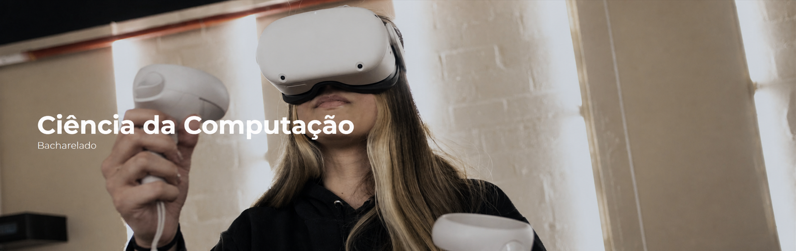
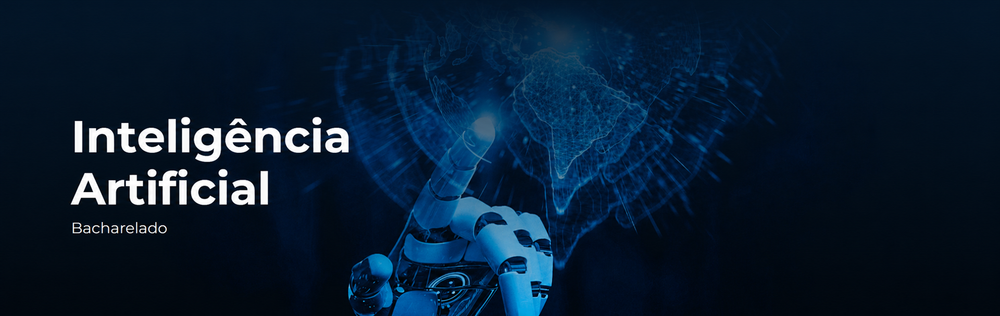

Análise e Desenvolvimento de Sistemas
Curso voltado para quem gosta de transformar ideias em soluções digitais. Une programação, desenvolvimento web e mobile, banco de dados, UX e gestão de projetos para criar sistemas úteis e funcionais.
UNIVERSIDADE DE MARÍLIA
Curso voltado para quem gosta de transformar ideias em soluções digitais. Une programação, desenvolvimento web e mobile, banco de dados, UX e gestão de projetos para criar sistemas úteis e funcionais.

Ideal para quem deseja compreender profundamente como a tecnologia funciona. O curso combina programação, algoritmos, matemática, hardware e arquitetura de computadores.
Para quem gosta de investigar, identificar vulnerabilidades e proteger sistemas. O curso aborda redes, criptografia, segurança de servidores, ethical hacking, análise de malware e perícia digital.

Voltado para quem se interessa por dados, padrões e máquinas capazes de aprender. O curso explora Machine Learning, Deep Learning, visão computacional, processamento de linguagem natural e inteligência artificial generativa.
Responda cinco perguntas rápidas e descubra qual curso de tecnologia da Unimar mais combina com o seu jeito de pensar.
Conheça o campus da Universidade de Marília e veja como chegar ao lugar onde sua jornada acadêmica pode começar.
Planeje sua visita, conheça a estrutura da universidade e descubra de perto o ambiente onde os cursos de tecnologia acontecem.